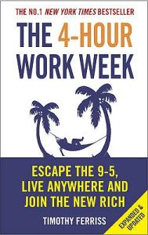
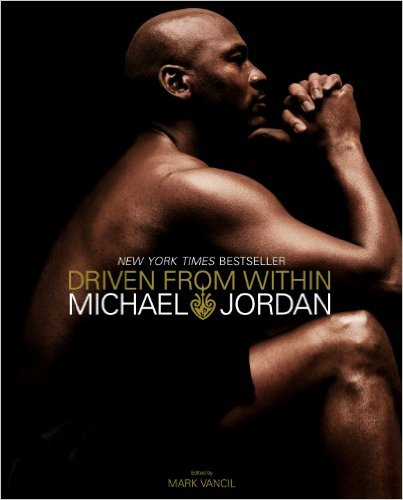
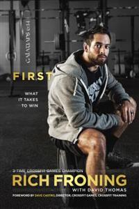
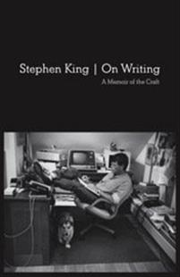
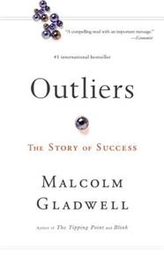
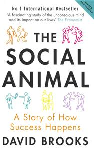
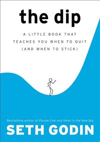
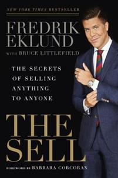
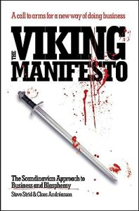
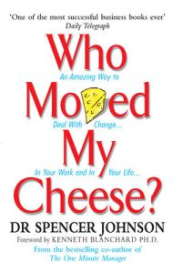

Eyeopening and fascinating on what our body can do to survive. We can push ourselves beyond limits we never new existed.

4 Hour Work Week
Timothy Ferriss
Motivated me to let go of what I had and start work for what I want. Tim Ferriss is one of the godfathers of the “digital nomad”-lifestyle.

Driven From Within
Michael Jordan
Michael worked very hard at excelling in everything he did. His attitude is 'Come on man, you might be sick, but you can still play'.

First
Rich Froning
Your physical strength will only take so far. Your mind will take you further. Froning’s biggest asset is his ability to push through short term pain to achieve long term success.
Focus
Daniel Goleman
Start being more aware of your self and your surrounding will enhance your life.
Immediate Action
Andy McNab
180 people started the tryouts for SAS. 8 made it. The only thing the recruiters are looking for is who has the heart to continue when you’re being pushed beyond limits.
Influence
Robert B. Cialdini
If you say/do something with enough authority, people will believe it. The more scarce something are the more valuable it is to us.
The Inner Game Of Tennis
W. Timothy Gallwey
The relationship between ego and body illustrated as a tennis match. Brilliant. Even though it’s related to sports the message can be applied to anything.
Löparens Hjärta
Marcus Torgeby
He wanted to think of what to do in life. So he went inte o the forrest for 4 years. And realised what he wanted to do.
Mastery
George Leonard
A story about the long term process. “80 % of your training/life is spent on a plateau”. It also explains why people fail with the long run.
No Easy Day
Mark Owen
Being in the special forces is all about learning how to be comfortable with being uncomfortable. Exciting even though I knew how it would end.
No Limits
Alan Abrahamsson
The story of when Michael Phelps won 8 gold medals in Beijing 2008. Exciting and inspirational. In the mind of an elite athlete.

On Writing
Steven King
Second draft if first draft - 10%. Steven have a close group of friends that gives him very honest feedback on his drafts.

Outliers
Malcolm Gladwell
“Hard work beats talent when talent doesn’t work hard”. Really. This is it. Work Hard.
Scar Tissue
Anthony Keidis
Constant drug abuse in the first half of the book. The later half was a mix of in-and-out of rehab, song writing and girls. Too much shooting-up-coke-and-herion-by-him-self-in-a-hotel-room and too little crazy adventures with his band members.

The Social Animal
David Brooks
Cool idea. A fictional story about how two people, from different backgrounds, got successful. It shows that a lot of the things we do and choices we make are made unconsciously.
The Alchemist
Paulo Coelho
About a boy who is determined to find and follow his purpose in life. Should be read at least two times. The underlining messages will sink in better the second time.

The Dip
Seth Godin
Short book with mind-blowing content. Being number one will give you serious benefits. This book is a must read.
The Dirt
Neil Strauss
Entertaining biography about one of the biggest rock band in the 80s. Packed with crazy stories. Great read on 'how to learn to do whatever comes into your mind and not care about the consequences'.

The Sell
Fredrik Eklund
Started with nothing. Did a two-week course, and now he's the number one broker in Manhattan
The 7 Habits of Highly Effective People
Steven R. Covey
Seek first to understand, then to be understood.

The Viking Manifesto
Steve Strid & Claes Andréassen
Forget marketing. Build the best product or service you can do, and the marketing will handle itself. And the better the story the less you have to spend on buying media.
Tommyland
Tommy Lee
I should stop reading rock-biographies. They are all the same.
Total Recall
Arnold Schwarzenegger
This dude has some serious work ethic. Three careers. Became world-class in all of them. One of the best biographies I’ve read.

Who Moved My Cheese?
Dr. Spencer Johnson
The world is always changing. Never let fear of change decide how you are going to live.
How to win friends and influence people
Dale Carnegie
The book that started the whole “self-help”-journey for me. The number one resource on becoming social savvy.
I am Zlatan
Zlatan Ibrahimovic
Confidence and narcissism gives you the persistence to go for what you want and not stop until you achieve it.